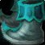
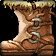
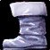

Blue Suede Shoes
Blue Suede ShoesBlue Suede Shoes162 armor, 37 stamina, 32 intellect, 56 spell damage, 56 healing power, 18 spell hit rating (1.43%)Drops from Kaz'rogal, Mount Hyjal
162 armor, 37 stamina, 32 intellect, 56 spell damage, 56 healing power,
18 spell hit rating (1.43%)
Drops from Kaz'rogal, Mount Hyjal
What influencers say
Showing 5 of 6 captured remarks, widest reach first, with every view
represented
Zatar (Classic Wow Builds)
Zatar (Classic Wow Builds) · 19:01
67k views
Puts it on warlock
While routing Slippers of the Sea Caller, Zatar remarks that warlocks
have no other real option in the new phase because Blue Suede Shoes are
pretty bad.
SubtleFW
SubtleFW · 12:28
33k views
Puts it on Protection Paladin
SubtleFW presents Blue Suede Shoes as another cloth threat option a
protection paladin can throw on for fights where the lost armor does not
matter.
Joardee
Joardee · 40:18
23k views
Keeps it off caster
Joardee calls Blue Suede Shoes cool but bad for everyone, a consolation
prize that might only beat the Lurker boots for someone desperate for
hit, since everyone wants the Sea Caller slippers.
Classic Gho
Classic Gho · 6:40
6k views
Keeps it off Balance Druid
Classic Gho dismisses Blue Suede Shoes for his balance druid boot slot
because they carry spell hit, saying he is not interested in them.
Knot
Knot · 16:51
4k views
Keeps it off caster
Knot says Blue Suede Shoes are a decent fill-in if the Sea Caller
slippers do not drop, but the spell hit is off-itemization for casters,
so he would not prioritize them either way.
Showing all 6 spec cards.
No specs are selected, so no cards are showing. Use Show every spec to bring all of them back.
Elemental Shaman
Prioritynot yet decided
Constraints
Spell hit cap16%spells
Elemental Precision-6%
Nature's Guidance-3%
Totem of Wrath-3%
Gear needs4%
Entry set4.1%clear
by 0.1%
Tier set, Tier 6 head and shoulder and
chest and hands8.2%clear by 4.1%
No crit cap.
Part of this spec's damage is periodic, and periodic damage cannot crit
in this patch, so crit reaches less of its output than the character
sheet suggests.
Global cooldown floor at 50% spell haste, which nothing rostered reaches
from gear this phase.
Delta
Blue Suede ShoesBlue Suede Shoes162 armor, 37 stamina, 32 intellect, 56 spell
damage, 56 healing power, 18 spell hit rating (1.43%)Drops from Kaz'rogal, Mount
Hyjal in Elemental Shaman
terms EPV 71.40
| Stat | Over best Phase 3 off-piece, Black
Temple
 Slippers of the SeacallerSlippers of the Seacaller162 armor, 25 stamina, 18 intellect, 18 spirit, 44 spell damage, 44 healing power, 29 spell crit rating (1.31%)Sockets yellow, blue · Socket bonus 4 healing power, 4 spell damageDrops from High Warlord Naj'entus, Black Temple EPV 86.52 |
Over next best off-piece, Black Temple Boots of Oceanic FuryBoots of Oceanic Fury679 armor, 28 stamina, 36 intellect, 55 spell damage, 55 healing power, 26 spell crit rating (1.18%)Drops from High Warlord Naj'entus, Black Temple EPV 85.72 | Over next best off-piece, Black
Temple
 Naturewarden's TreadsNaturewarden's Treads305 armor, 39 stamina, 18 intellect, 44 spell damage, 44 healing power, 26 spell crit rating (1.18%)Sockets yellow, blue · Socket bonus 4 healing power, 4 spell damageDrops from Reliquary of Souls, Black Temple EPV 85.09 |
Over best pre-phase off-piece, Karazhan Glider's Foot-WrapsGlider's Foot-Wraps134 armorDrops from Shadikith the Glider, Karazhan EPV 79.00 | ||||
|---|---|---|---|---|---|---|---|---|
| Change | Converted | Change | Converted | Change | Converted | Change | Converted | |
| armor | 0 | -517 | -143 | +28 | ||||
| stamina | +12 | +9 | -2 | +37 | ||||
| intellect | +14 | +0.17% spell crit | -4 | -0.05% spell crit | +14 | +0.17% spell crit | +32 | +0.40% spell crit |
| spirit | -18 | 0 | 0 | 0 | ||||
| spell damage | +12 | +1 | +12 | +56 | ||||
| healing power | +12 | +1 | +12 | +56 | ||||
| spell hit | +18 | +1.43% | +18 | +1.43% | +18 | +1.43% | +18 | +1.43% |
| spell crit | -29 | -1.31% | -26 | -1.18% | -26 | -1.18% | 0 | |
| Stat Highlights (Total Change) | -1.14% spell crit +12 spell damage +12 healing power +1.43% spell hit | -1.23% spell crit +1 spell damage +1 healing power +1.43% spell hit | -1.00% spell crit +12 spell damage +12 healing power +1.43% spell hit | +0.40% spell crit +56 spell damage +56 healing power +1.43% spell hit | ||||
No Tier 6 and no Tier 5 is ranked for this spec in this slot, so that
comparison is not shown. A weapon the workbook does not rank cannot be
compared against, and a spec with no captured gear set has nothing
recorded to carry in.
Balance Druid
Prioritynot yet decided
Constraints
Spell hit cap16%spells
Balance of Power-4%
Totem of Wrath-3%
Gear needs9%
Entry set8.5%short
by 0.6%
Tier set, Tier 6 head and shoulder and
chest and hands9.4%clear by 0.4%
The entry set holds four Tier 5 pieces, at the head, the shoulder, the
chest and the hands, which is the Tier 5 four-piece, so either token
breaks it; both tokens are raw EPV gains, and this set trades those four
for four Tier 6 pieces, at the head, the shoulder, the chest and the
hands.
No crit cap.
Part of this spec's damage is periodic, and periodic damage cannot crit
in this patch, so crit reaches less of its output than the character
sheet suggests.
Global cooldown floor at 50% spell haste, which nothing rostered reaches
from gear this phase.
Delta
Blue Suede ShoesBlue Suede Shoes162 armor, 37 stamina, 32 intellect, 56 spell
damage, 56 healing power, 18 spell hit rating (1.43%)Drops from Kaz'rogal, Mount
Hyjal in Balance Druid
terms EPV 89.76
| Stat | Over best Phase 3 off-piece, Black Temple Slippers of the SeacallerSlippers of the Seacaller162 armor, 25 stamina, 18 intellect, 18 spirit, 44 spell damage, 44 healing power, 29 spell crit rating (1.31%)Sockets yellow, blue · Socket bonus 4 healing power, 4 spell damageDrops from High Warlord Naj'entus, Black Temple EPV 98.36 | Over next best off-piece, Black Temple Naturewarden's TreadsNaturewarden's Treads305 armor, 39 stamina, 18 intellect, 44 spell damage, 44 healing power, 26 spell crit rating (1.18%)Sockets yellow, blue · Socket bonus 4 healing power, 4 spell damageDrops from Reliquary of Souls, Black Temple EPV 94.50 | Over best pre-phase off-piece, Tailoring Boots of BlastingBoots of Blasting148 armor, 25 stamina, 25 intellect, 39 spell damage, 39 healing power, 18 spell hit rating (1.43%), 25 spell crit rating (1.13%)Crafted, Tailoring EPV 85.10 | Over next best off-piece, Karazhan Glider's Foot-WrapsGlider's Foot-Wraps134 armorDrops from Shadikith the Glider, Karazhan EPV 79.00 | ||||
|---|---|---|---|---|---|---|---|---|
| Change | Converted | Change | Converted | Change | Converted | Change | Converted | |
| armor | 0 | -143 | +14 | +28 | ||||
| stamina | +12 | -2 | +12 | +37 | ||||
| intellect | +14 | +0.17% spell crit · +3.50 spell damage · +3.50 healing power | +14 | +0.17% spell crit · +3.50 spell damage · +3.50 healing power | +7 | +0.09% spell crit · +1.75 spell damage · +1.75 healing power | +32 | +0.40% spell crit · +8 spell damage · +8 healing power |
| spirit | -18 | 0 | 0 | 0 | ||||
| spell damage | +12 | +12 | +17 | +56 | ||||
| healing power | +12 | +12 | +17 | +56 | ||||
| spell hit | +18 | +1.43% | +18 | +1.43% | 0 | +18 | +1.43% | |
| spell crit | -29 | -1.31% | -26 | -1.18% | -25 | -1.13% | 0 | |
| Stat Highlights (Total Change) | -1.14% spell crit +15.50 spell damage +15.50 healing power +1.43% spell hit | -1.00% spell crit +15.50 spell damage +15.50 healing power +1.43% spell hit | -1.04% spell crit +18.75 spell damage +18.75 healing power | +0.40% spell crit +64 spell damage +64 healing power +1.43% spell hit | ||||
No Tier 6 and no Tier 5 is ranked for this spec in this slot, so that
comparison is not shown. A weapon the workbook does not rank cannot be
compared against, and a spec with no captured gear set has nothing
recorded to carry in.
Arcane Mage
Prioritynot yet decided
Constraints
Spell hit cap16%spells
Arcane Focus-10%
Gear needs6%
Entry set6.6%clear
by 0.6%
Tier set, Tier 6 legs6.1%clear
by 0.1%
No crit cap.
Global cooldown floor at 50% spell haste, which nothing rostered reaches
from gear this phase.
Delta
Blue Suede ShoesBlue Suede Shoes162 armor, 37 stamina, 32 intellect, 56 spell
damage, 56 healing power, 18 spell hit rating (1.43%)Drops from Kaz'rogal, Mount
Hyjal in Arcane Mage
terms EPV 54.98
| Stat | Over best Phase 3 off-piece, Black Temple Slippers of the SeacallerSlippers of the Seacaller162 armor, 25 stamina, 18 intellect, 18 spirit, 44 spell damage, 44 healing power, 29 spell crit rating (1.31%)Sockets yellow, blue · Socket bonus 4 healing power, 4 spell damageDrops from High Warlord Naj'entus, Black Temple EPV 64.39 | Over best pre-phase off-piece, Serpentshrine Cavern Velvet Boots of the GuardianVelvet Boots of the Guardian148 armor, 21 stamina, 21 intellect, 15 spirit, 49 spell damage, 49 healing power, 24 spell crit rating (1.09%)Drops from The Lurker Below, Serpentshrine Cavern EPV 52.96 | Over next best off-piece, Tailoring Boots of BlastingBoots of Blasting148 armor, 25 stamina, 25 intellect, 39 spell damage, 39 healing power, 18 spell hit rating (1.43%), 25 spell crit rating (1.13%)Crafted, Tailoring EPV 50.79 | Over next best off-piece, Karazhan Boots of ForetellingBoots of Foretelling134 armor, 27 stamina, 23 intellect, 26 spell damage, 26 healing power, 19 spell crit rating (0.86%)Sockets red, yellow · Socket bonus 3 intellectDrops from Maiden of Virtue, Karazhan EPV 49.03 | ||||
|---|---|---|---|---|---|---|---|---|
| Change | Converted | Change | Converted | Change | Converted | Change | Converted | |
| armor | 0 | +14 | +14 | +28 | ||||
| stamina | +12 | +16 | +12 | +10 | ||||
| intellect | +14 | +0.20% spell crit · +4.02 spell damage | +11 | +0.16% spell crit · +3.16 spell damage | +7 | +0.10% spell crit · +2.01 spell damage | +9 | +0.13% spell crit · +2.59 spell damage |
| spirit | -18 | -15 | 0 | 0 | ||||
| spell damage | +12 | +7 | +17 | +30 | ||||
| healing power | +12 | +7 | +17 | +30 | ||||
| spell hit | +18 | +1.43% | +18 | +1.43% | 0 | +18 | +1.43% | |
| spell crit | -29 | -1.31% | -24 | -1.09% | -25 | -1.13% | -19 | -0.86% |
| Stat Highlights (Total Change) | -1.11% spell crit +16.02 spell damage +12 healing power +1.43% spell hit | -0.93% spell crit +10.16 spell damage +7 healing power +1.43% spell hit | -1.03% spell crit +19.01 spell damage +17 healing power | -0.73% spell crit +32.59 spell damage +30 healing power +1.43% spell hit | ||||
No Tier 6 and no Tier 5 is ranked for this spec in this slot, so that
comparison is not shown. A weapon the workbook does not rank cannot be
compared against, and a spec with no captured gear set has nothing
recorded to carry in.
Shadow Priest
Prioritynot yet decided
Constraints
Spell hit cap16%spells
Shadow Focus-10%
Gear needs6%
Entry set7.3%clear
by 1.3%
Tier set, Tier 6 head and shoulder and
chest and hands7.9%clear by 1.9%
No crit cap.
Part of this spec's damage is periodic, and periodic damage cannot crit
in this patch, so crit reaches less of its output than the character
sheet suggests.
Global cooldown floor at 50% spell haste, which nothing rostered reaches
from gear this phase.
Delta
Blue Suede ShoesBlue Suede Shoes162 armor, 37 stamina, 32 intellect, 56 spell
damage, 56 healing power, 18 spell hit rating (1.43%)Drops from Kaz'rogal, Mount
Hyjal in Shadow Priest
terms EPV 71.83
| Stat | Over best
pre-phase off-piece, Tailoring
 Frozen Shadoweave BootsFrozen Shadoweave Boots122 armor, 15 stamina, 9 intellect, 57 frost damage, 57 shadow damageSockets yellow, blue · Socket bonus 3 spell hit ratingCrafted, Tailoring EPV 81.56 |
Over next best off-piece, Karazhan Glider's Foot-WrapsGlider's Foot-Wraps134 armorDrops from Shadikith the Glider, Karazhan EPV 79.00 | Over best Phase 3 off-piece, Black Temple Slippers of the SeacallerSlippers of the Seacaller162 armor, 25 stamina, 18 intellect, 18 spirit, 44 spell damage, 44 healing power, 29 spell crit rating (1.31%)Sockets yellow, blue · Socket bonus 4 healing power, 4 spell damageDrops from High Warlord Naj'entus, Black Temple EPV 76.30 | Over next best off-piece, Serpentshrine Cavern Boots of the Shifting NightmareBoots of the Shifting Nightmare148 armor, 41 stamina, 22 intellect, 59 shadow damage, 18 spell hit rating (1.43%)Drops from Hydross the Unstable, Serpentshrine Cavern EPV 74.21 | ||||
|---|---|---|---|---|---|---|---|---|
| Change | Converted | Change | Converted | Change | Converted | Change | Converted | |
| armor | +40 | +28 | 0 | +14 | ||||
| stamina | +22 | +37 | +12 | -4 | ||||
| intellect | +23 | +0.29% spell crit | +32 | +0.40% spell crit | +14 | +0.17% spell crit | +10 | +0.12% spell crit |
| spirit | 0 | 0 | -18 | 0 | ||||
| spell damage | +56 | +56 | +12 | +56 | ||||
| healing power | +56 | +56 | +12 | +56 | ||||
| frost damage | -57 | 0 | 0 | 0 | ||||
| shadow damage | -57 | 0 | 0 | -59 | ||||
| spell hit | +18 | +1.43% | +18 | +1.43% | +18 | +1.43% | 0 | |
| spell crit | 0 | 0 | -29 | -1.31% | 0 | |||
| Stat Highlights (Total Change) | +0.29% spell crit +56 spell damage +56 healing power +1.43% spell hit | +0.40% spell crit +56 spell damage +56 healing power +1.43% spell hit | -1.14% spell crit +12 spell damage +12 healing power +1.43% spell hit | +0.12% spell crit +56 spell damage +56 healing power | ||||
No Tier 6 and no Tier 5 is ranked for this spec in this slot, so that
comparison is not shown. A weapon the workbook does not rank cannot be
compared against, and a spec with no captured gear set has nothing
recorded to carry in.
Affliction Warlock
Prioritynot yet decided
Constraints
Spell hit cap16%spells
Totem of Wrath-3%
Gear needs13.1%
The Suppression talent does not cover this spec's filler spell, so none
of it counts.
Entry set16.1%clear
by 3%
Tier set, Tier 6 head and shoulder and
hands18.3%clear by 5.2%
No crit cap.
Part of this spec's damage is periodic, and periodic damage cannot crit
in this patch, so crit reaches less of its output than the character
sheet suggests.
Global cooldown floor at 50% spell haste, which nothing rostered reaches
from gear this phase.
Delta
Blue Suede ShoesBlue Suede Shoes162 armor, 37 stamina, 32 intellect, 56 spell
damage, 56 healing power, 18 spell hit rating (1.43%)Drops from Kaz'rogal, Mount
Hyjal in Affliction
Warlock terms EPV
87.20
| Stat | Over best Phase 3 off-piece, Black Temple Slippers of the SeacallerSlippers of the Seacaller162 armor, 25 stamina, 18 intellect, 18 spirit, 44 spell damage, 44 healing power, 29 spell crit rating (1.31%)Sockets yellow, blue · Socket bonus 4 healing power, 4 spell damageDrops from High Warlord Naj'entus, Black Temple EPV 87.88 | Over best pre-phase off-piece, Serpentshrine Cavern Boots of the Shifting NightmareBoots of the Shifting Nightmare148 armor, 41 stamina, 22 intellect, 59 shadow damage, 18 spell hit rating (1.43%)Drops from Hydross the Unstable, Serpentshrine Cavern EPV 87.22 | Over next best off-piece, Tailoring Boots of BlastingBoots of Blasting148 armor, 25 stamina, 25 intellect, 39 spell damage, 39 healing power, 18 spell hit rating (1.43%), 25 spell crit rating (1.13%)Crafted, Tailoring EPV 85.08 | Over next best off-piece, Tailoring Frozen Shadoweave BootsFrozen Shadoweave Boots122 armor, 15 stamina, 9 intellect, 57 frost damage, 57 shadow damageSockets yellow, blue · Socket bonus 3 spell hit ratingCrafted, Tailoring EPV 78.91 | ||||
|---|---|---|---|---|---|---|---|---|
| Change | Converted | Change | Converted | Change | Converted | Change | Converted | |
| armor | 0 | +14 | +14 | +40 | ||||
| stamina | +12 | -4 | +12 | +22 | ||||
| intellect | +14 | +0.17% spell crit | +10 | +0.12% spell crit | +7 | +0.09% spell crit | +23 | +0.28% spell crit |
| spirit | -18 | 0 | 0 | 0 | ||||
| spell damage | +12 | +56 | +17 | +56 | ||||
| healing power | +12 | +56 | +17 | +56 | ||||
| frost damage | 0 | 0 | 0 | -57 | ||||
| shadow damage | 0 | -59 | 0 | -57 | ||||
| spell hit | +18 | +1.43% | 0 | 0 | +18 | +1.43% | ||
| spell crit | -29 | -1.31% | 0 | -25 | -1.13% | 0 | ||
| Stat Highlights (Total Change) | -1.14% spell crit +12 spell damage +12 healing power +1.43% spell hit | +0.12% spell crit +56 spell damage +56 healing power | -1.05% spell crit +17 spell damage +17 healing power | +0.28% spell crit +56 spell damage +56 healing power +1.43% spell hit | ||||
No Tier 6 and no Tier 5 is ranked for this spec in this slot, so that
comparison is not shown. A weapon the workbook does not rank cannot be
compared against, and a spec with no captured gear set has nothing
recorded to carry in.
Destruction Warlock
Prioritynot yet decided
Constraints
Spell hit cap16%spells
Totem of Wrath-3%
Gear needs13.1%
No hit talent exists for this spec.
Entry set13.5%clear
by 0.4%
Tier set, Tier 6 head and shoulder and
hands15.4%clear by 2.3%
No crit cap.
Global cooldown floor at 50% spell haste, which nothing rostered reaches
from gear this phase.
Delta
Blue Suede ShoesBlue Suede Shoes162 armor, 37 stamina, 32 intellect, 56 spell
damage, 56 healing power, 18 spell hit rating (1.43%)Drops from Kaz'rogal, Mount
Hyjal in Destruction
Warlock terms EPV
111.66
| Stat | Over best Phase 3 off-piece, Black Temple Slippers of the SeacallerSlippers of the Seacaller162 armor, 25 stamina, 18 intellect, 18 spirit, 44 spell damage, 44 healing power, 29 spell crit rating (1.31%)Sockets yellow, blue · Socket bonus 4 healing power, 4 spell damageDrops from High Warlord Naj'entus, Black Temple EPV 113.31 | Over best pre-phase off-piece, Serpentshrine Cavern Boots of the Shifting NightmareBoots of the Shifting Nightmare148 armor, 41 stamina, 22 intellect, 59 shadow damage, 18 spell hit rating (1.43%)Drops from Hydross the Unstable, Serpentshrine Cavern EPV 110.70 | Over next best off-piece, Tailoring Boots of BlastingBoots of Blasting148 armor, 25 stamina, 25 intellect, 39 spell damage, 39 healing power, 18 spell hit rating (1.43%), 25 spell crit rating (1.13%)Crafted, Tailoring EPV 106.44 | Over next best off-piece, Tailoring Frozen Shadoweave BootsFrozen Shadoweave Boots122 armor, 15 stamina, 9 intellect, 57 frost damage, 57 shadow damageSockets yellow, blue · Socket bonus 3 spell hit ratingCrafted, Tailoring EPV 101.65 | ||||
|---|---|---|---|---|---|---|---|---|
| Change | Converted | Change | Converted | Change | Converted | Change | Converted | |
| armor | 0 | +14 | +14 | +40 | ||||
| stamina | +12 | -4 | +12 | +22 | ||||
| intellect | +14 | +0.17% spell crit | +10 | +0.12% spell crit | +7 | +0.09% spell crit | +23 | +0.28% spell crit |
| spirit | -18 | 0 | 0 | 0 | ||||
| spell damage | +12 | +56 | +17 | +56 | ||||
| healing power | +12 | +56 | +17 | +56 | ||||
| frost damage | 0 | 0 | 0 | -57 | ||||
| shadow damage | 0 | -59 | 0 | -57 | ||||
| spell hit | +18 | +1.43% | 0 | 0 | +18 | +1.43% | ||
| spell crit | -29 | -1.31% | 0 | -25 | -1.13% | 0 | ||
| Stat Highlights (Total Change) | -1.14% spell crit +12 spell damage +12 healing power +1.43% spell hit | +0.12% spell crit +56 spell damage +56 healing power | -1.05% spell crit +17 spell damage +17 healing power | +0.28% spell crit +56 spell damage +56 healing power +1.43% spell hit | ||||
No Tier 6 and no Tier 5 is ranked for this spec in this slot, so that
comparison is not shown. A weapon the workbook does not rank cannot be
compared against, and a spec with no captured gear set has nothing
recorded to carry in.